Montaje del cigüeñal y el cojinete
Herramientas especiales
| • | Adaptador de martillo de percusión GE 6125-1B |
| • | EN 45059 Medidor de ángulos |
| • | EN 49102 Herramienta de desmontaje de sombreretes de cojinete del cigüeñal |
Si desea informarse sobre herramientas regionales equivalentes, consultar Herramientas especiales .
Procedimiento de montaje de cojinetes de cigüeñal
Nota: Si los cojinetes de cigüeñal se han utilizado en un motor en funcionamiento, debe sustituirlos por NUEVOS cojinetes de cigüeñal para el nuevo montaje.
- Limpie el orificio de la carcasa del cigüeñal con un trapo que no suelte pelusas.
- Limpie todo el aceite del lado trasero de los nuevos semicojinetes.
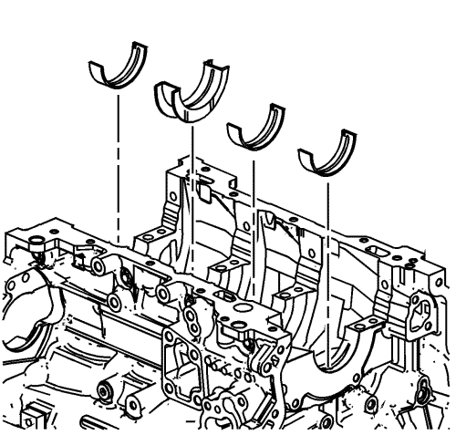
- Monte los nuevos cojinetes de cigüeñal superiores en su posición. El cojinete de empuje pertenece al muñón número 3. Asegúrese de que el suplemento de cojinete superior contiene la ranura y el orificio de transferencia de aceite. Ruede el cojinete a su posición de modo que la espiga de bloqueo encaje en la ranura de cigüeñal. El cojinete debe disponerse alineado con la carcasa superior del cigüeñal.
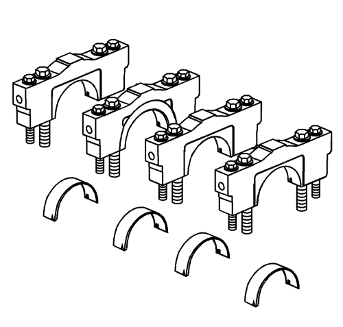
- Monte los nuevos cojinetes de cigüeñal inferiores en su posición en los sombreretes de cojinete de bancada. Los cojinetes de cigüeñal inferiores se distinguen porque NO presentan ranuras u orificios. Los cojinetes deben disponerse alineados con los sombreretes de cojinete de cigüeñal.
Procedimiento de montaje del cigüeñal
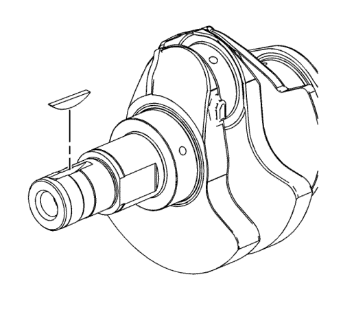
- Si se ha extraído, monte la llave del cigüeñal. Introduzca suavemente la llave en su lugar con un martillo pequeño de plástico/bronce con punta suave hasta que llegue al fondo del chavetero.
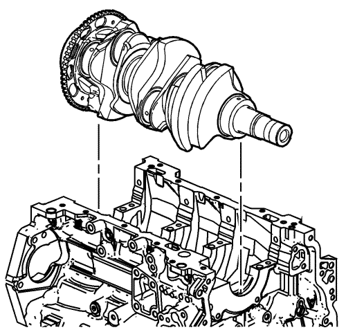
- Baje suavemente el cigüeñal a su posición en el bloque motor.
Procedimiento de medición de juego de cojinete de cigüeñal
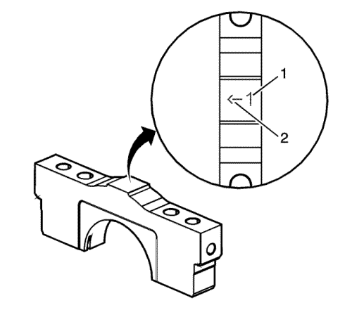
- Coloque un nuevo material de medición de plástico a temperatura ambiente alrededor de todo el perímetro de los muñones de cojinete de cigüeñal.
- Identifique el orden correcto de los sombreretes de cojinete de bancada. Los sombreretes de los cojinetes de bancada están numerados del 1 (1) al 4; el sombrerete del cojinete de bancada delantero está marcado con el número 1. La flecha (2) debe estar orientada hacia la parte delantera del motor.
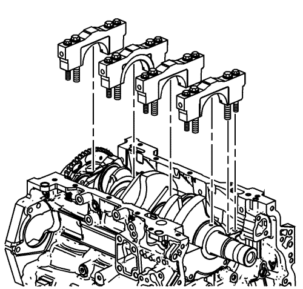
- Monte los sombreretes de cojinete de bancada de cigüeñal
- Monte sin apretar los pernos originales de sombrerete de bancada interiores .
- Monte sin apretar los pernos originales de sombrerete de bancada exteriores .
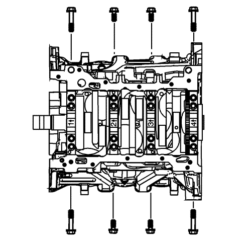
- Monte sin apretar los pernos originales cortos/interiores de sombrerete de bancada .
- Monte sin apretar los pernos originales largos/exteriores de sombrerete de bancada .
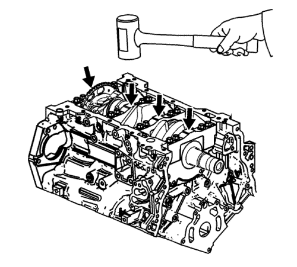
- Golpee los sombreretes de cojinete de bancada del cigüeñal con un martillo de punta suave.
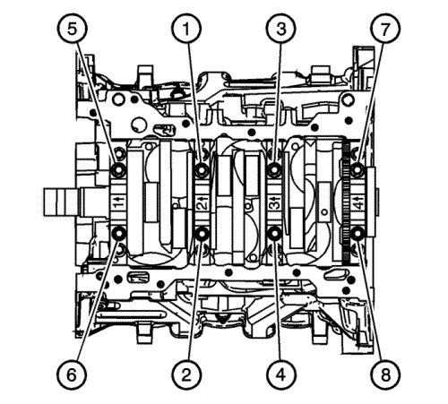
- Apriete los tornillos de sombrerete de bancada mediante el medidor EN 45059 en el orden siguiente:
Precaución: Consulte Precaución con las fijaciones en la sección Prólogo
- En primer ligar, apriete los tornillos interiores (1-8) en dos pasos.
| 10.1. | Apriete los tornillos interiores a 20 N·m (15 lib. pie) en el primer paso. |
| 10.2. | Apriete los tornillos interiores (1-8) otros 80 grados en el 2º paso. |
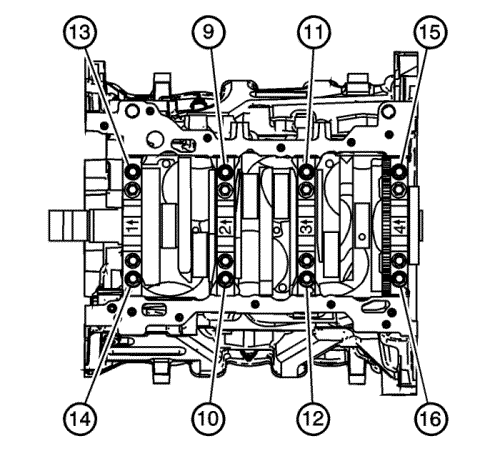
- En segundo lugar, apriete los tornillos exteriores (9-16) en dos pasos.
| 11.1. | Apriete los tornillos exteriores a 15 N·m (11 lib. pie) en el primer paso. |
| 11.2. | Apriete los tornillos exteriores (9-16) otros 110 grados en el 2º paso. |
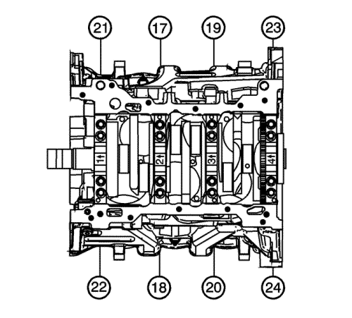
- En tercer lugar, apriete los tornillos cortos/interiores (17-20) en dos pasos.
| 12.1. | Apriete los tornillos cortos/interiores a 30 N·m (22 lib. pie) en el primer paso. |
| 12.2. | Apriete los tornillos cortos/interiores (17-20) otros 60 grados en el 2º paso. |
- En cuarto lugar, apriete los tornillos largos/exteriores (21-24) en dos pasos.
| 13.1. | Apriete los tornillos largos/exteriores a 30 N·m (22 lib. pie) en el primer paso. |
| 13.2. | La segunda vez, apriete adicionalmente los pernos largos/exteriores (21-24) a otros 60 grados en el segundo paso. |
Nota: No gire el cigüeñal.
- Tras alcanzar el par de apriete final, deje que el conjunto se asiente durante 2 minutos.
- Suelte los tornillos laterales de sombrerete de cojinete del cigüeñal.
- Suelte los tornillos exteriores de sombrerete de cojinete del cigüeñal.
- Suelte los tornillos interiores de sombrerete de cojinete del cigüeñal.
- Desmonte los sombreretes de cojinete del cigüeñal usando el adaptador GE 6125-1B y la herramienta de desmontaje EN 49102.
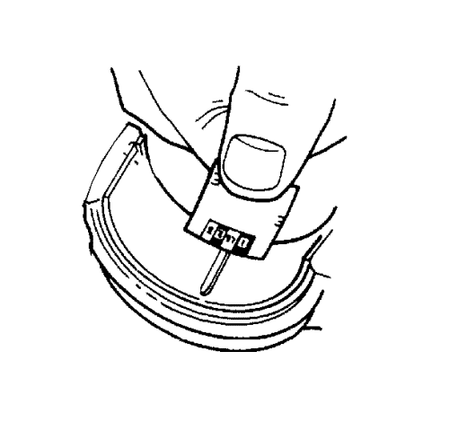
- Determine el juego de cojinete de cigüeñal comparando la anchura del material de plástico de medición aplanado en su punto más ancho con la escala del envase del material de medición.
Nota: Los cojinetes de cigüeñal PUEDEN reutilizarse tras la comprobación del juego si los cojinetes no se han utilizado nunca en un motor en funcionamiento.
- Compare sus resultados con las Especificaciones mecánicas del motor : LF1 . Si los nuevos cojinetes no proporcionan el juego de cojinete a cigüeñal adecuado, compruebe lo siguiente:
| 20.1. | Vuelva a medir los muñones de cigüeñal para comprobar que el tamaño es correcto según lo especificado y asegúrese de que se han montado cojinetes nuevos adecuados. Si el tamaño de los muñones de cigüeñal es incorrecto, sustituya o rectifique el cigüeñal. Está permitido rectificar el cigüeñal, y están disponibles cojinetes de menor tamaño. |
| 20.2. | Vuelva a medir el diámetro de orificio de cojinete del cigüeñal del bloque motor y asegúrese de que el tamaño es adecuado. El orificio de cojinete de cigüeñal del bloque motor no puede rectificarse y debe sustituirse el bloque si no se cumplen los valores especificados. |
- Elimine el material de medición de plástico de los muñones de cojinete del cigüeñal con un trapo suave que no suelte pelusas.
- Eleve el cigüeñal fuera del bloque motor.
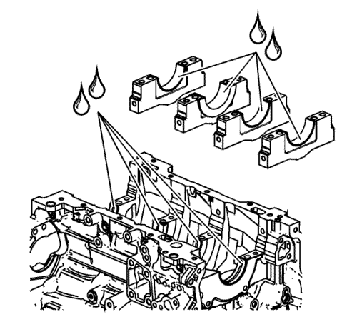
- Aplique una cantidad adecuada de lubricación previa de cigüeñal o aceite de motor para limpieza a las superficies superiores o inferiores del cojinete. Consulte Adhesivos, líquidos, lubricantes y selladores para el lubricante recomendado.
- Baje suavemente el cigüeñal a su posición en el bloque motor.
- Identifique el orden correcto de los sombreretes de cojinete de bancada. Los sombreretes de los cojinetes de bancada están numerados del 1 (1) al 4; el sombrerete del cojinete de bancada delantero está marcado con el número 1. La flecha (2) debe estar orientada hacia la parte delantera del motor.
- Monte los sombreretes de cojinete de bancada de cigüeñal
- Monte sin apretar los pernos originales de sombrerete de bancada interiores .
- Monte sin apretar los NUEVOS pernos de sombrerete de bancada exteriores.
- Golpee los sombreretes de cojinete de bancada del cigüeñal con un martillo de punta suave.
Nota: Originalmente, los tornillos de los sombreretes de bancada laterales tienen sellador en la brida de la cabeza del tornillo. Se deben usar tornillos NUEVOS. Si no se utilizan pernos NUEVOS, pueden producirse fugas de aceite de la carcasa del cigüeñal a través de los pernos.
- Monte sin apretar los NUEVOS pernos cortos/interiores de sombrerete de bancada .
- Monte sin apretar los NUEVOS pernos largos/exteriores de sombrerete de bancada .
- Apriete los tornillos de sombrerete de bancada mediante el medidor EN 45059 en el orden siguiente:
- En primer ligar, apriete los tornillos interiores (1-8) en dos pasos.
| 33.1. | Apriete los tornillos interiores a 20 N·m (15 lib. pie) en el primer paso. |
| 33.2. | Apriete los tornillos interiores (1-8) otros 80 grados en el 2º paso. |
- En segundo lugar, apriete los tornillos exteriores (9-16) en dos pasos.
| 34.1. | Apriete los tornillos exteriores a 15 N·m (11 lib. pie) en el primer paso. |
| 34.2. | Apriete los tornillos exteriores (9-16) otros 110 grados en el 2º paso. |
- En tercer lugar, apriete los tornillos cortos/interiores (17-20) en dos pasos.
| 35.1. | Apriete los tornillos cortos/interiores a 30 N·m (22 lib. pie) en el primer paso. |
| 35.2. | Apriete los tornillos cortos/interiores (17-20) otros 60 grados en el 2º paso. |
- En cuarto lugar, apriete los tornillos largos/exteriores (21-24) en dos pasos.
| 36.1. | Apriete los tornillos largos/exteriores a 30 N·m (22 lib. pie) en el primer paso. |
| 36.2. | La segunda vez, apriete adicionalmente los pernos largos/exteriores (21-24) a otros 60 grados en el segundo paso. |
- Asegúrese de que el cigüeñal gira sin agarrotamiento y sin hacer ruido.
| © Copyright Chevrolet Europe. All rights reserved |